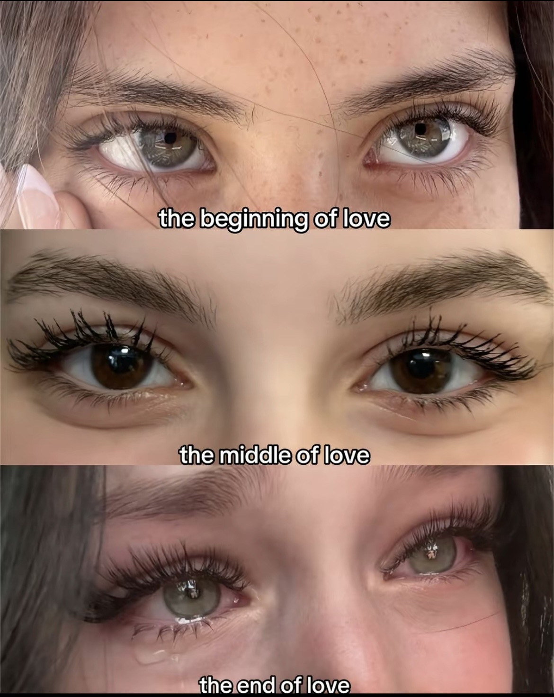

> LSD, pot and booze.
> Great visuals, everything is wavy and colourful. I'm enjoying this one today.
> The song and the universe are equal. Thousands of dancers moving in unison, moving like an endless song.
ENTRY 002
06-09-2024
> Something I found online.
> It fits my mindset well, I think.
> Sonder?.
ENTRY 003
00-00-0000
> TouchDesign.
> .
> .
ENTRY 004
00-00-0000
> Beginning, Equalibrium, End.
> Coming at ya fast.

> .
ENTRY 005
01-01-2024
> The ball must fit through the hole, but once it fits through it must keep fitting through.
> It carries on squeezing through the center. It is all infinite.
> Now I am the ball and I must keep moving thorugh it all. Always.
ENTRY 006
17-06-2024
> If I was to name three founding factors to my success it would be simple.
> Today's post is more of a anonymous thank you to God, my father and a real ass nigga on the internet.
> Each of them have helped my life in different moments and in their own respective ways, but I surely won't forget any of them.